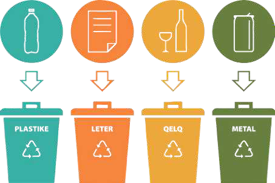

TEMATIKA 5: MJEDISI DHE SHËNDETI4. Piknik në natyrë
Lexo dhe mëso
Toka është shtëpia jonë e përbashkët. Prej saj ne marrim shumë të mira. Marrim ajrin e freskët, pa të cilin nuk jetojmë, marrim ushqime të ndryshme, marrim ujin e domosdoshëm për të jetuar, marrim edhe kënaqësinë dhe qetësinë që na jep një shëtitje apo piknik në natyrë.
Natyra na i jep të gjitha këto pa asnjë kusht. Ajo tregohet bujare me ne. Mirëpo ne shumë herë e ndotim dhe e shfrytëzojmë pa kujdes. Duhet të dimë se nuk ka shëndet të mirë pa ujë e ajër të pastër, dhe ushqim të shëndetshëm. Prandaj kujdesi për natyrën është detyrë e secilit prej nesh.
Ne kujdesemi për natyrën kur gjatë një shëtitjeje apo pikniku marrim kuti dhe çanta letre dhe i hedhim mbetjet në koshat e caktuar. Asnjëherë nuk duhet t’i lëmë mbeturinat përtokë.
Ne kujdesemi për natyrën edhe kur tregohemi kreativë dhe i ripërdorim disa materiale në mënyra të reja. Pra, kur riciklojmë. Kjo përfshin një numër veprimtarish, që kanë të bëjnë me ripërpunimin e materialeve të shfrytëzuara dhe ripërdorimin e tyre.
Hapat e riciklimit janë:
- grumbullimi,
- transportimi,
- klasifikimi,
- përpunimi dhe prodhimi.
